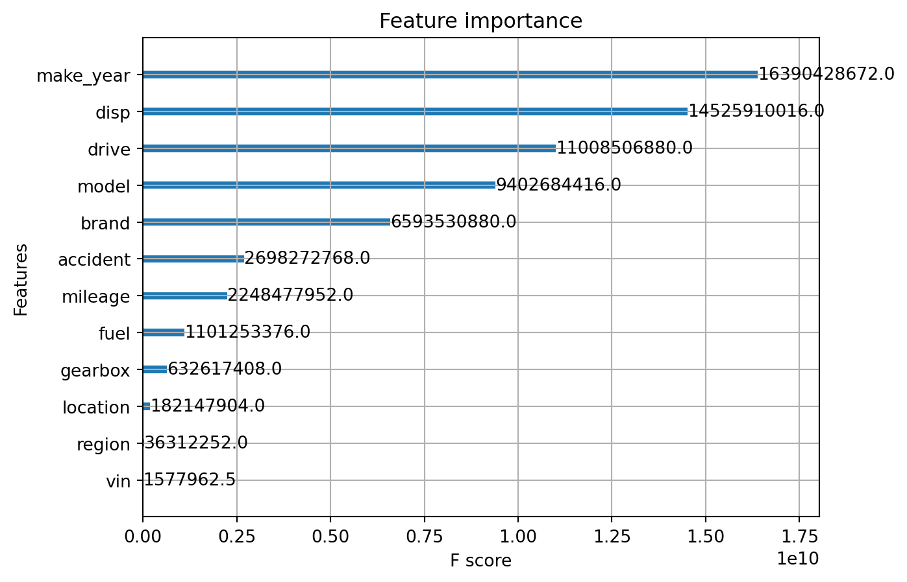

import pandas as pd
import numpy as np
import matplotlib.pyplot as plt
from catboost import CatBoostRegressor
from sklearn.model_selection import train_test_split
from sklearn.metrics import mean_absolute_error
import lightgbm as lgb
from sklearn.preprocessing import LabelEncoder
from lightgbm import LGBMRegressor, train
from IPython.display import Markdown2 Прогнозування ціни автомобіля
2.1 Catboost
2.1.1 Імпорт бібліотек
2.1.2 Завантаження даних
train = pd.read_csv('00_data_clean/train.csv')
train.sample(3)| price | full_name | brand | model | make_year | mileage | location | region | fuel | disp | gearbox | drive | accident | vin | desc | age | price_log | |
|---|---|---|---|---|---|---|---|---|---|---|---|---|---|---|---|---|---|
| 11215 | 23450 | INFINITI QX30 PREMIUM AWD 2016 | INFINITI | QX30 PREMIUM AWD | 2016 | 108 | КИЇВ | КИЇВ | БЕНЗИН | 2.0 | АКПП | ПОВНИЙ | ТАК | ТАК | МОЖЛИВИЙ ДОБРИЙ ТОРГ БІЛЯ АВТО.\n\nПРОДАЮ INFI... | 6 | 10.062626 |
| 2855 | 7800 | MERCEDES-BENZ E 320 2003 | MERCEDES-BENZ | E 320 | 2003 | 300 | ЛЬВІВ | ЛЬВІВСЬКА | ДИЗЕЛЬ | 3.2 | АКПП | ЗАДНІЙ | НІ | ТАК | ПЕРША РЕЄСТРАЦІЯ В УКРАЇНІ \nДВИГУН КОРОБКА В ... | 19 | 8.961879 |
| 31479 | 11500 | BMW 320 2013 | BMW | 320 | 2013 | 152 | ОДЕСА | ОДЕСЬКА | БЕНЗИН | 2.0 | АКПП | ЗАДНІЙ | ТАК | ТАК | МАШИНА З АМЕРИКИ. ПОВНІСТЮ ОБСЛУГОВАНА. НОВИЙ ... | 9 | 9.350102 |
test = pd.read_csv('00_data_clean/test.csv')
test.sample(3)| price | full_name | brand | model | make_year | mileage | location | region | fuel | disp | gearbox | drive | accident | vin | desc | age | price_log | |
|---|---|---|---|---|---|---|---|---|---|---|---|---|---|---|---|---|---|
| 4415 | 19000 | MERCEDES-BENZ E 220 7G TRONIK 2011 | MERCEDES-BENZ | E 220 7G TRONIK | 2011 | 190 | ІРШАВА | ЗАКАРПАТСЬКА | ДИЗЕЛЬ | 2.1 | АКПП | ЗАДНІЙ | НІ | ТАК | АВТОМОБІЛЬ В ХОРОШОМУ СТАНІ. ПРОДАЖ НЕ СПІШНА,... | 11 | 9.852194 |
| 5752 | 4400 | SKODA FABIA 2007 | SKODA | FABIA | 2007 | 257 | КРИВИЙ РІГ | ДНІПРОПЕТРОВСЬКА | ГАЗ | 1.4 | МКПП | ПЕРЕДНІЙ | НІ | ТАК | Я ВЛАДЕЛЕЦ, МАШИНА В ХОРОШЕМ СОСТОЯНИИ, ПО КУЗ... | 15 | 8.389360 |
| 357 | 7529 | VOLKSWAGEN TOUAREG 2004 | VOLKSWAGEN | TOUAREG | 2004 | 293 | ЧЕРНІВЦІ | ЧЕРНІВЕЦЬКА | ДИЗЕЛЬ | 2.5 | АКПП | ПОВНИЙ | НІ | ТАК | НЕЩОДАВНО ПРИГНАНИЙ VAG З ІТАЛІЇ, Є ПЕВНІ НЮАН... | 18 | 8.926518 |
2.1.3 Класифікуємо ознаки на типи
features2drop = ['full_name', 'desc', 'price_log']
targets = ['price']
cat_features = ['brand', 'model', 'location', 'region', 'fuel', 'gearbox', 'drive', 'accident', 'vin']
filtered_features = [i for i in train.columns if (i not in targets and i not in features2drop)]
num_features = [i for i in filtered_features if i not in cat_features]
print('cat_features :', len(cat_features), cat_features)
print('num_features :', len(num_features), num_features)
print('targets', targets)cat_features : 9 ['brand', 'model', 'location', 'region', 'fuel', 'gearbox', 'drive', 'accident', 'vin']
num_features : 4 ['make_year', 'mileage', 'disp', 'age']
targets ['price']2.1.4 Навчаємо Catboost та робимо прогноз на тестових даних
X = train[filtered_features].drop(targets, axis=1, errors='ignore')
y = train['price']
X_train, X_test, y_train, y_test = train_test_split(X, y, test_size=0.2,
random_state=2023)cat_r = CatBoostRegressor(cat_features=cat_features, task_type="GPU",
random_seed=2023)
cat_r.fit(X_train, y_train,
eval_set=(X_test, y_test),
verbose=150, plot=False)Learning rate set to 0.0887430: learn: 20951.9704763 test: 19718.6792064 best: 19718.6792064 (0) total: 32.8ms remaining: 32.8s150: learn: 9379.7517897 test: 8840.9942779 best: 8840.9564688 (149) total: 5.28s remaining: 29.7s300: learn: 8094.2846362 test: 8255.1288424 best: 8254.6181574 (298) total: 10.5s remaining: 24.4s450: learn: 7825.4912976 test: 8161.5918830 best: 8161.2547963 (392) total: 15.5s remaining: 18.9s600: learn: 7305.3577011 test: 8061.1877795 best: 8049.1591901 (582) total: 20.5s remaining: 13.6s750: learn: 7251.1309179 test: 8066.5336929 best: 8049.1591901 (582) total: 24.5s remaining: 8.13s900: learn: 7188.4427166 test: 8056.7350172 best: 8040.1918154 (805) total: 29.2s remaining: 3.21s999: learn: 6914.3538777 test: 8096.1365896 best: 8040.1918154 (805) total: 32.5s remaining: 0us
bestTest = 8040.191815
bestIteration = 805
Shrink model to first 806 iterations.<catboost.core.CatBoostRegressor at 0x2b9e5ed6530>2.1.5 Оцінка моделі
y_pred = cat_r.predict(X_test)
mae_catboost = mean_absolute_error(y_test, y_pred)
print(f'\n MAE: {mae_catboost}')
MAE: 3288.4245268685792.1.6 Оцінка важливості ознак
cat_r.get_feature_importance(prettified=True, type='FeatureImportance')| Feature Id | Importances | |
|---|---|---|
| 0 | disp | 30.152347 |
| 1 | make_year | 17.569090 |
| 2 | brand | 16.727893 |
| 3 | mileage | 11.085807 |
| 4 | age | 8.277802 |
| 5 | drive | 5.564494 |
| 6 | accident | 4.674996 |
| 7 | gearbox | 1.831595 |
| 8 | fuel | 1.802577 |
| 9 | region | 0.964083 |
| 10 | location | 0.914469 |
| 11 | model | 0.412602 |
| 12 | vin | 0.022246 |
2.2 XGBoost
2.2.1 Імпорт бібліотек
import xgboost as xg
from sklearn.compose import ColumnTransformer
from sklearn.preprocessing import OneHotEncoder2.2.2 Підготовка даних
train[train.select_dtypes(['object']).columns] = train.select_dtypes(['object']).apply(lambda x: x.astype('category'))
test[test.select_dtypes(['object']).columns] = test.select_dtypes(['object']).apply(lambda x: x.astype('category'))
X = train[filtered_features].drop(targets, axis=1, errors='ignore')
y = train['price']
X_train, X_test, y_train, y_test = train_test_split(X, y, test_size=0.2, random_state=2023)2.2.3 Навчання моделі
xgb_r = xg.XGBRegressor(tree_method="gpu_hist", enable_categorical=True, seed=2023)
xgb_r.fit(X_train, y_train)XGBRegressor(base_score=None, booster=None, callbacks=None,
colsample_bylevel=None, colsample_bynode=None,
colsample_bytree=None, early_stopping_rounds=None,
enable_categorical=True, eval_metric=None, feature_types=None,
gamma=None, gpu_id=None, grow_policy=None, importance_type=None,
interaction_constraints=None, learning_rate=None, max_bin=None,
max_cat_threshold=None, max_cat_to_onehot=None,
max_delta_step=None, max_depth=None, max_leaves=None,
min_child_weight=None, missing=nan, monotone_constraints=None,
n_estimators=100, n_jobs=None, num_parallel_tree=None,
predictor=None, random_state=None, ...)In a Jupyter environment, please rerun this cell to show the HTML representation or trust the notebook. On GitHub, the HTML representation is unable to render, please try loading this page with nbviewer.org.
XGBRegressor(base_score=None, booster=None, callbacks=None,
colsample_bylevel=None, colsample_bynode=None,
colsample_bytree=None, early_stopping_rounds=None,
enable_categorical=True, eval_metric=None, feature_types=None,
gamma=None, gpu_id=None, grow_policy=None, importance_type=None,
interaction_constraints=None, learning_rate=None, max_bin=None,
max_cat_threshold=None, max_cat_to_onehot=None,
max_delta_step=None, max_depth=None, max_leaves=None,
min_child_weight=None, missing=nan, monotone_constraints=None,
n_estimators=100, n_jobs=None, num_parallel_tree=None,
predictor=None, random_state=None, ...)2.2.4 Оцінка моделі
y_pred = xgb_r.predict(X_test)
mae_xgboost = mean_absolute_error(y_test, y_pred)
print(f'\n MAE: {mae_xgboost}')
MAE: 3125.04567249241562.2.5 Оцінка важливості ознак
xg.plot_importance(xgb_r, importance_type="gain")
plt.show()
2.3 LightGBM
2.3.1 Імпорт бібліотек
import lightgbm as lgb2.3.2 Параметри моделі
params = {
'task': 'train',
'boosting': 'gbdt',
'objective': 'regression',
'metric': 'mae',
'seed': 2023
}2.3.3 Підготовка даних
lgb_train = lgb.Dataset(X_train, y_train)
lgb_eval = lgb.Dataset(X_test, y_test, reference=lgb_train)2.3.4 Навчання моделі
lgb_r = lgb.train(params,
train_set=lgb_train,
valid_sets=lgb_eval)2.3.5 Оцінка моделі
y_pred = lgb_r.predict(X_test)
mae_lbg = mean_absolute_error(y_test, y_pred)
print("MAE: %.2f" % mae_lbg)MAE: 2924.992.3.6 Важливість ознак
df_feature_importance = (
pd.DataFrame({
'feature': lgb_r.feature_name(),
'importance': lgb_r.feature_importance(),
})
.sort_values('importance', ascending=False)
)
df_feature_importance| feature | importance | |
|---|---|---|
| 7 | disp | 823 |
| 3 | mileage | 657 |
| 2 | make_year | 503 |
| 0 | brand | 393 |
| 1 | model | 239 |
| 9 | drive | 117 |
| 4 | location | 86 |
| 6 | fuel | 69 |
| 10 | accident | 68 |
| 5 | region | 22 |
| 8 | gearbox | 22 |
| 12 | age | 1 |
| 11 | vin | 0 |
2.4 Висновки та про позиції
2.4.1 Загальний підсумок ефективності моделей:
mae_score = {'Модель': ['CatBoost', 'XGBoost', 'LightGBM'],
'MAE': [mae_catboost, mae_xgboost, mae_lbg]}
mae_score_df = pd.DataFrame(data=mae_score)
mae_score_df| Модель | MAE | |
|---|---|---|
| 0 | CatBoost | 3288.424527 |
| 1 | XGBoost | 3125.045672 |
| 2 | LightGBM | 2924.985495 |
Загалом, всі моделі показують приблизно однаковий результат. Але найкращий результат показав LightGBM з показником 2924.99. Ймовірно це пов’язано з тим, що модель змогла краще оцінити важливість ознак, особливо model та brand.
2.4.2 Пропозиції щодо подальшого дослідження та підвищення ефективності:
- використання даних з data.gov.ua;
- парсинг зовнішніх даних та формування додаткових ознак, наприклад кольору, типу кузова та інших;
- автоматична генерація та фільтрація ознак;
- використання більшої кількості моделей та їх блендінг;
- обробка опису оголошення методами NLP та використання його як додаткової ознаки;
- оптимізація пам’яті та прискорення обчислень